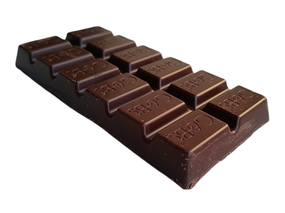
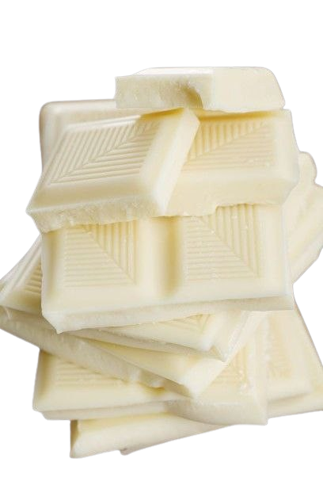
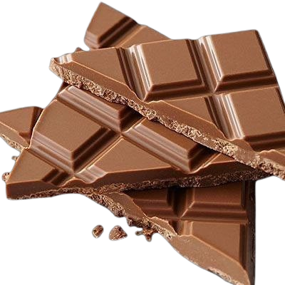
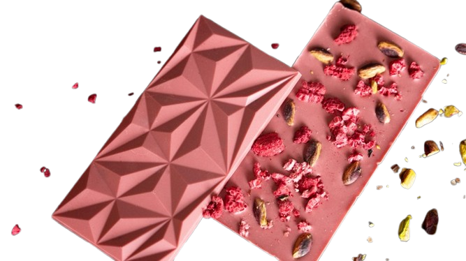

| Image | Description |
|  |
Dark chocolate, with its notable deep brown color, is the second most popular type of chocolate. It is sometimes referred to as black or semisweet chocolate and is noticeably less sweet than milk chocolate. In recent years, dark chocolate has surged in popularity thanks to a number of articles being published about the health benefits. Dark chocolate is fairly simple in composition. It is typically made from two ingredients — chocolate liquor and sugar. Sometimes small amounts of vanilla and soy lecithin (an emulsifier) are added. According to the FDA definition, dark chocolate must contain at least 15% chocolate liquor but usually contains closer to about 50%. Most high-quality, dark chocolate does not contain added dairy and can be a great vegan-friendly chocolate. The lack of dairy and less sugar gives dark chocolate firmer texture than milk chocolate or white chocolate. This is why a well-tempered piece of dark chocolate will have a nice snap when broken in half. The flavor profile of dark chocolate can vary widely based on the cocoa content of the chocolate. It is often slightly-sweet and chocolatey, with notes of baked brownie, red fruit, and brown spice (think cinnamon or allspice). Due to its chocolate-forward flavor profile, dark chocolate is great for baking when your recipe needs a rich, chocolatey flavor. We recommend trying these classic brownies or this decadent chocolate bourbon maple pecan pie. Dark chocolate's widely-acclaimed health benefits make it a favorite snack among health-conscious consumers. When properly stored, it has a shelf-life of about 20 months. Read More |
|  |
White chocolate is easy to identify because of its cream or ivory color. It is made by combining sugar, cocoa butter, milk, vanilla, and lecithin (an emulsifier that helps the ingredients blend together). These ingredients give white chocolate its sweet vanilla aroma. White chocolate often has a flavor profile that can be described as predominately sweet, with bold notes of sweetened condensed milk and vanilla. Good quality white chocolate will have a rich, soft, and creamy texture — a characteristic that comes from its cocoa butter base and high sugar and milk content. White chocolate is unique because it does not contain any cocoa solids. The cocoa solids are what give chocolate it’s dark brown color and chocolatey taste that we all know and love. The U.S. Food and Drug Administration (FDA) sets standards of classification for each kind of chocolate. According to their definition, in order for something to be considered white chocolate it must contain at least 20% cocoa butter and 14% milk, and no more than 55% sugar. Many ask, “Is white chocolate, chocolate?” The answer is yes because it contains ingredients from the cacao bean. Not to be confused with the white-flavored or vanilla-flavored coating that is often found in sub-par products. Cocoa butter is expensive because it is in high demand by the cosmetics industry, for use in lotions and other beauty products. Therefore, companies often create a compound that substitutes other vegetable fats in place of the cocoa butter. These white chocolate-like substitutes can’t be officially called white chocolate because they often don’t meet the 20% cocoa butter requirement set by the FDA definition. White chocolate, when stored properly, has a shelf life of about four months. While it is delicious to eat, white chocolate is also great for cooking, baking, and decorating. The dairy-forward flavor profile adds subtle richness to any dish, while still letting other flavors shine through. White chocolate’s color lends itself well to decorating cookies, cakes, and confections. If it’s your first time cooking with white chocolate, try this Read More |
|  |
Milk chocolate is a classic that we all know and love from childhood. With its light brown color, creamy texture, and sweet flavor, milk chocolate is widely regarded as the most popular type of chocolate. It is made by combining chocolate liquor (cocoa solids and cocoa butter) with sugar, and milk. Sometimes an emulsifier, such as soy lecithin, is added to enhance its smoothness. According to the FDA definition, milk chocolate must contain at least 10% chocolate liquor and 12% milk. Break off a piece of milk chocolate and let the aroma fill the air. Enjoy the smell of caramelized sugar, vanilla, chocolate, and dairy. Then take a bite and let the flavor fill your mouth. Milk chocolate often has a flavor profile that can be described as sweet and chocolatey, with notes of cooked milk and caramelized sugar and a vanilla aftertaste. Milk chocolate is considered to be a good middle of the road chocolate. It is characteristically sweeter, with a softer texture than dark chocolate, but not quite as sweet and soft as white chocolate. When properly stored, milk chocolate has a shelf-life of about 16 months. Milk chocolate is a great choice for when you want a treat or chocolate gift everyone will enjoy. It can be used in baking when your recipe requires a milder chocolate flavor, we suggest trying it in these chocolate waffles. Read More |
|  |
Ruby chocolate is a style or distinct variety of chocolate that is pink or purple in colour. Barry Callebaut, a Belgian–Swiss cocoa company, introduced it as a distinct product on 5 September 2017 after beginning development of their product in 2004.[2][3][4] It has a pink color, and Barry Callebaut says it is a fourth natural type of chocolate (in addition to dark, milk, and white chocolate varieties).[5][6] Some other industry experts have said that some cacao pods are naturally pink or purple in colour, and thus pink chocolate has been available before. Read More |